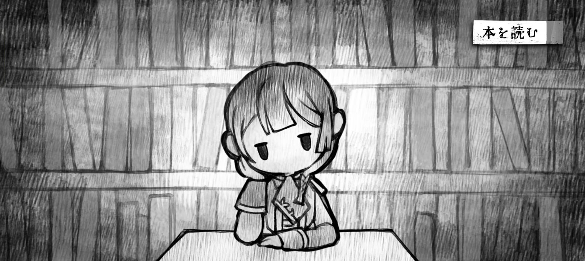

FRIEND LINKS
一些值得收藏的相遇，和仍在更新的小站
PLACES I KEEP
鹤的站点
存放博客插画与生活片段的图片空间。
photo.0305.tw.cn
看一看我在做什么，最早是做给一个人的，但后来已经没了踪迹
live.0305.tw.cn
如果你也有一个认真记录生活的小站，欢迎通过留言页介绍自己。
按 Esc 关闭。搜索会前往文章列表。
当前浏览器未启用 JavaScript。文章、小诗和导航仍可阅读；搜索、主题切换和留言演示需要启用 JavaScript。